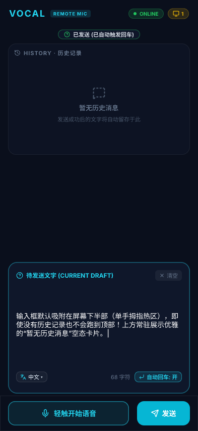
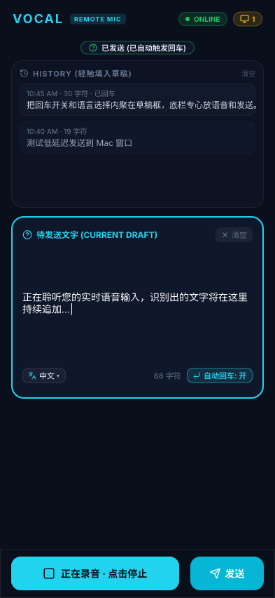
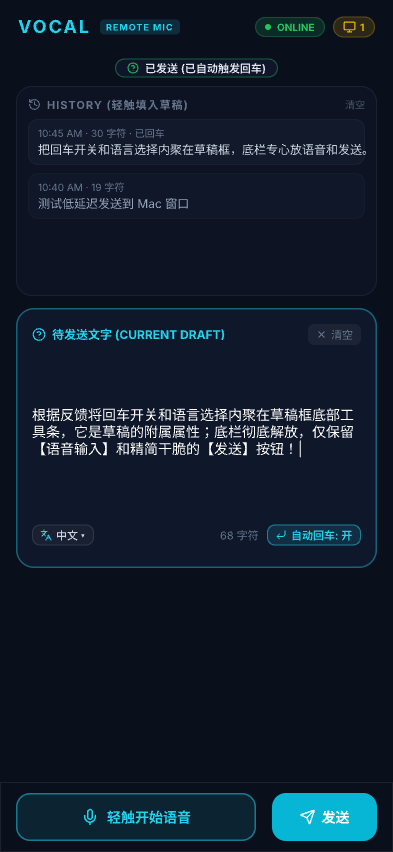
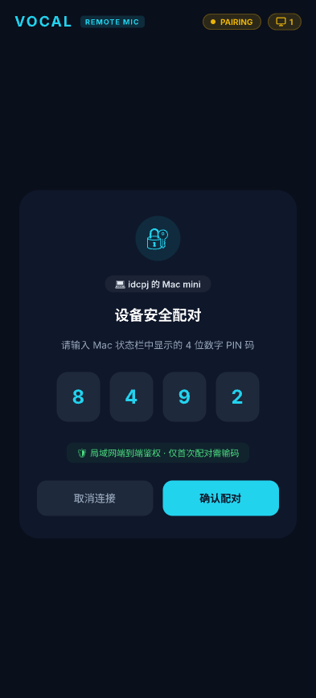
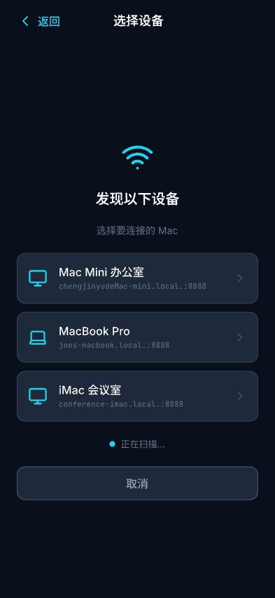

无需安装，在此直接试玩。点按麦克风说话，或选一句短语，看文字如何以低于 12ms 的极速，毫秒级注入当前焦点应用。
{
"type": "text_append",
"text": "",
"enter": true
}
• Vocal 全新极简官网正式上线；
• 手机端支持从容审阅草稿，彻底解决实时上屏的字符抖动；
（新注入内容将在此处无缝追加...）
每一处系统级工程设计，都为了纯粹沉浸的无感输入体验与坚若磐石的安全性。
点对点原生 WebSocket 直连传输。手机与电脑同处局域网，响应延迟仅 10~15 毫秒，感受不到任何无线中转的拖沓，物理键盘级击键反馈。
基于 Apple 原生 SFSpeechRecognizer 端侧神经网络转录，纯局域网点对点传输。没有第三方云端中继，没有录音留存，拔掉外网网线照样丝滑离线工作。
手机端草稿实时累加，静音不自动清空。从容确认或微调无误后再一键发送，彻底杜绝实时流式退格的跳动错乱与尴尬错字。
单设备独占通道与防抢占机制 (PRD-06)。当一台设备连入时，宿主自动锁定专属输入信道，拒绝局域网其他设备并发打字冲突与恶意抢占（返回 OCCUPIED 状态并互斥断开），给用户绝对纯净专注的打字通道。
公共 Wi-Fi 防蹭防误连。电脑端动态生成 4 位随机安全 PIN 码验证，手机首次配对成功后颁发可信 Token 自动免密重连；连续 3 次输错即刻断开保护并临时锁定防爆破。
长文灵感不再遗失。支持最多 50 条历史草稿沉淀流弹性滚动，会议速记、长篇邮件与常用高频短语随点随发，支持随时滚动回溯、复制编辑与一键快速重发。
系统底层辅助功能 API 驱动。VS Code、微信、备忘录、Word、Notion，全局任意前台窗口无缝秒敲，支持自动回车模式切换。
源自 vocal.pen 原生设计系统，100% 极简暗黑工程美学。点击任意卡片即可全屏放大探查像素级细节。





为你的每一次击键与灵感创造极致流畅。
选择你的平台，两步即可开始体验。
Apple Silicon (M1~M4) & Intel 64位通用架构
下载 DMG 安装包 (v1.2.0) ⚠️ 首次运行请在「系统设置 > 隐私与安全性 > 辅助功能」勾选 VocalHost./mac/build_macos.sh
# 或单文件秒编译启动
swiftc -o VocalHost mac/VocalHostApp.swift -parse-as-library && ./VocalHost
winget install Vocal.VocalHost
cd mobile && fvm flutter run --profile
cd mobile && fvm flutter build apk --release
OCCUPIED 状态，杜绝打字冲突与恶意抢占。